Extracción de evidencia de un volcado RAM con Volatility/p>
ACTIVIDAD
Actividad 17
ALUMNO
Aaron Emanuel González Díaz (182447)
ASIGNATURA
CNO IV - PROGRAMACION WAP
DOCENTE
Mtro. Servando López Contreras
1. Objetivo
Analizar un volcado de memoria RAM (OtterCTF.vmem) perteneciente al equipo de un presunto
cibercriminal, utilizando Volatility 2.6, para reconstruir la línea de tiempo del
incidente e identificar credenciales, procesos maliciosos o camuflados, comunicaciones de red hacia un
servidor de comando y control, correos electrónicos usados en ingeniería social y evidencia de una
cartera de criptomonedas asociada al caso.
2. Hechos del Caso
Elementos de la FGM especializada obtuvieron un volcado de memoria RAM de un presunto cibercriminal
autodenominado “Morty”, vinculado a un grupo secreto en Telegram originado desde un
enlace de Reddit, donde un usuario de nombre “Ricky” solicitaba pagos en BTC a cambio
de pertenecer a un grupo de cibercriminales (posible red botnet). Inteligencia proporcionó las iniciales
FAF3 (objetivo potencial) y TFE (posible autor de los servidores
“Lunar”), y se requiere vincular el equipo, dirección IP, sistema operativo, contraseña y correos
electrónicos empleados, además de identificar la cartera cripto a la que se envían los recursos del
rescate.
Imagen analizada
OtterCTF.vmem — volcado completo de memoria RAM (~665 MB).
Herramienta
Volatility Foundation Volatility Framework 2.6 (ejecutable standalone en Windows).
3. Análisis Forense de Memoria Volátil
1.Marca de tiempo local del volcado de memoria
vol.exe -f OtterCTF.vmem imageinfo Fecha/hora local: 04 de agosto de 2018, 22:34:22 (UTC+3). Este dato fija el
instante exacto de la captura de memoria, permitiendo correlacionar todos los demás hallazgos, y el
offset UTC+3 aporta una pista sobre la ubicación geográfica/horaria del equipo o del atacante.
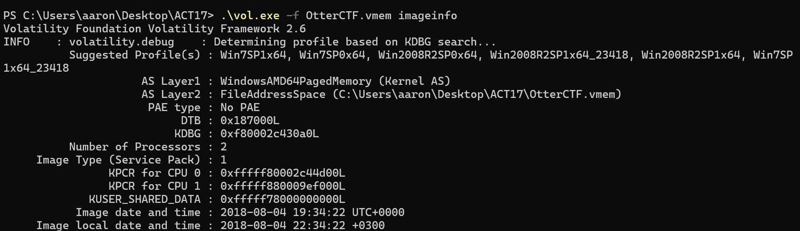
Figura 1. Salida del comando imageinfo.
2.Sistema operativo y arquitectura
A partir de la cabecera de imageinfo (Figura 1): Sistema operativo: Windows 7 Service Pack 1 (perfil Win7SP1x64). Arquitectura: 64 bits. Número de procesadores: 2 CPUs.
3.Usuario y contraseña
Los comandos cmdscan y consoles no arrojaron
resultados. Se extrajeron los secretos LSA con lsadump, exponiendo el valor
DefaultPassword (autologon), codificado en hexadecimal UTF-16LE: Usuario: Rick · Contraseña: MortyIsReallyAnOtter
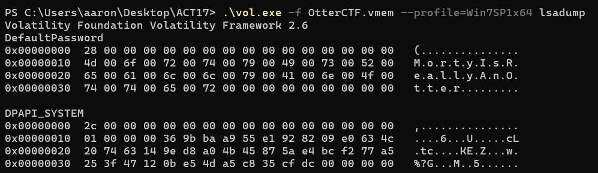
Figura 2. Salida de lsadump mostrando el secreto DefaultPassword.
4.Dirección IP local del equipo
vol.exe ... netscan — conexión local relevante hacia el proceso
sospechoso LunarMS.exe: Dirección IP local: 192.168.202.131
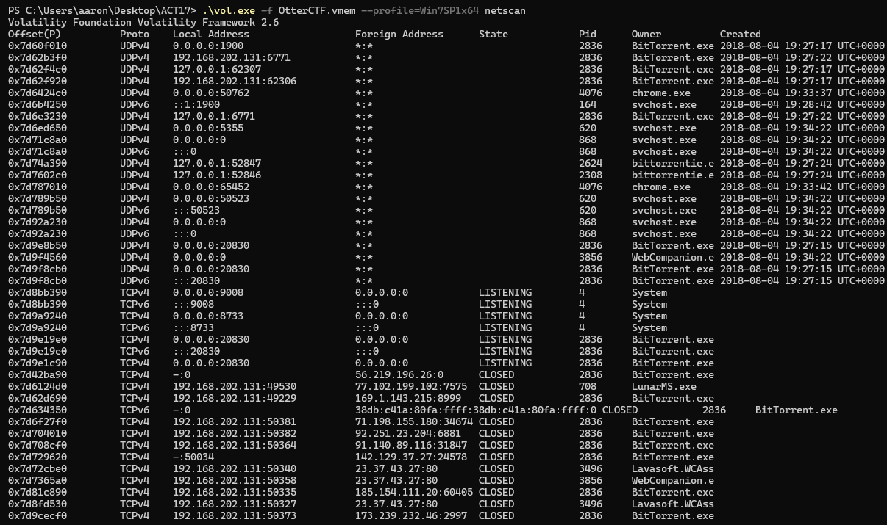
Figura 3. Fragmento de netscan, destacando la conexión de LunarMS.exe.
5.Colmenas del Registro del Sistema
vol.exe ... hivelist. Conocer las colmenas permite usar
printkey sin montar la imagen de disco; SAM contiene los hashes de usuarios locales,
SECURITY los secretos LSA (punto 3), y NTUSER.DAT del usuario Rick permite rastrear su actividad.
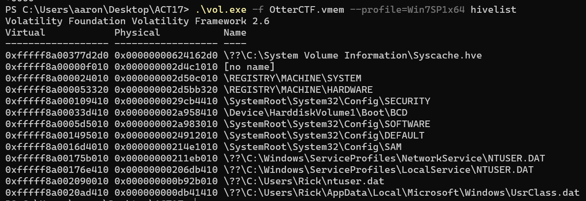
Figura 4. Salida del comando hivelist.
6.Nombre del equipo
printkey -K "ControlSet001\Control\ComputerName\ComputerName" Nombre del equipo: WIN-LO6FAF3DTFE — contiene las subcadenas “FAF3” y “TFE”,
coincidiendo con las iniciales de los hechos del caso.
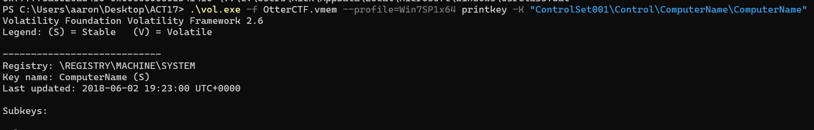
Figura 5. Salida de printkey sobre la clave ComputerName.
7.Tres procesos relevantes
vol.exe ... pstree
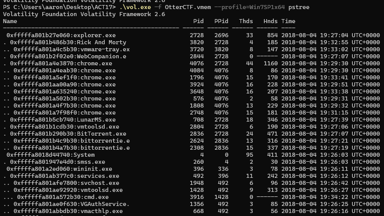
Figura 6. Fragmento del árbol de procesos (pstree).
Rick And Morty (PID 3820): nombre fuera de lo común para un binario de
Windows; referencia directa a la temática del caso.
vmware-tray.ex (PID 3720): se hace pasar por el proceso legítimo de VMware
pero el nombre está truncado y cuelga de un padre no habitual (masquerading); sobre este
proceso se realizó un memdump.
LunarMS.exe (PID 708): identificado en netscan con una conexión saliente
hacia un host externo; principal candidato a malware/C2.
8.Servidor malicioso remoto
netscan (Figura 3). IP remota: 77.102.199.102 · Puerto: 7575 Ubicación posible del atacante: Londres, Reino Unido.
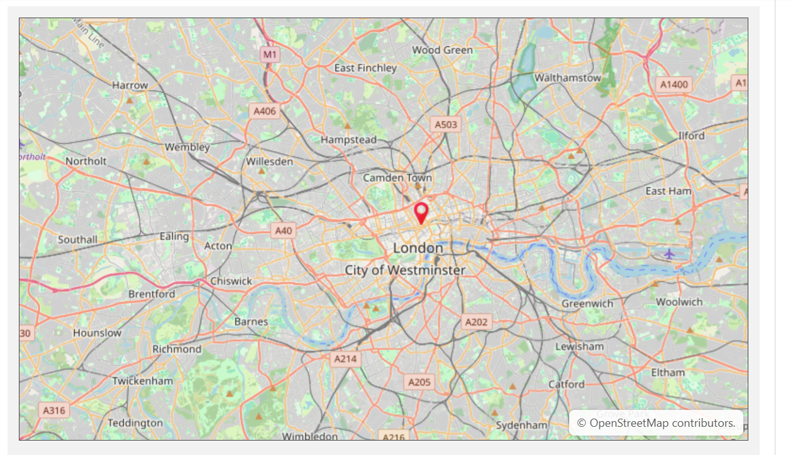
Figura 10. Geolocalización de la IP 77.102.199.102 (geolocation.com).
9.Correos electrónicos e ingeniería social
yarascan -Y "@mail.com" --wide
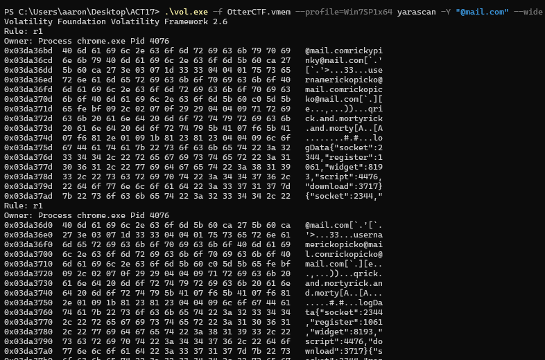
Figura 7. Resultado de yarascan buscando el patrón “@mail.com”.
Correos empleados: rickypinky@mail.com, rickopicko@mail.com Plataforma/navegador: Windows, Google Chrome 68.0, vía webmail de dl.mail.com.
10.Cartera de criptomonedas
Las herramientas gráficas (screenshot, notepad) no
eran compatibles con el perfil de la imagen, por lo que se extrajo el proceso vmware-tray.ex
(PID 3720) con memdump y se analizó con strings64.exe, filtrando con
expresiones regulares de direcciones Bitcoin mediante PowerShell Select-String (por
problemas de findstr con texto Unicode/UTF-16):
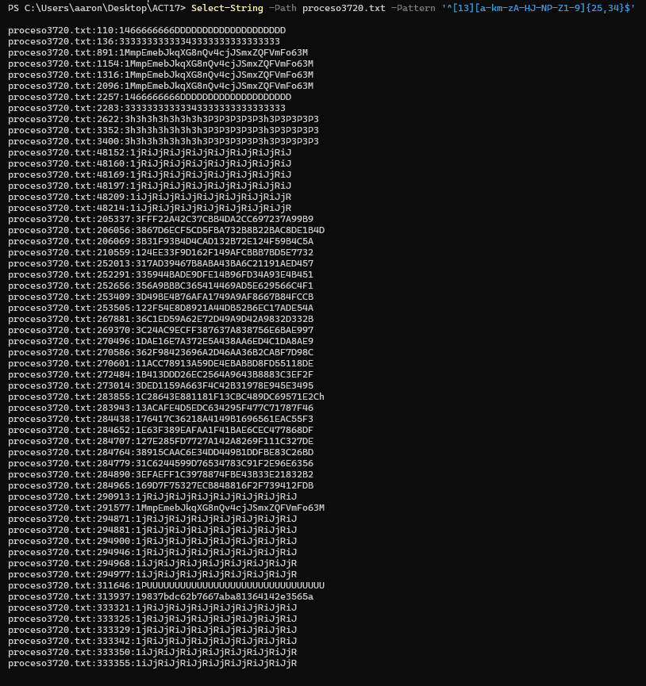
Figura 8. Coincidencias de direcciones Bitcoin tipo P2PKH/P2SH en el volcado de memoria.
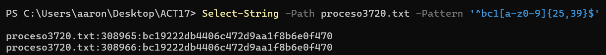
Figura 9. Búsqueda de direcciones Bech32 (patrón bc1…) — sin coincidencias válidas.
Cartera de criptomoneda: 1MmpEmebJkqXG8nQv4cjJSmxZQFVmFo63M — es la dirección
que aparece repetida de forma consistente entre el ruido de la memoria.
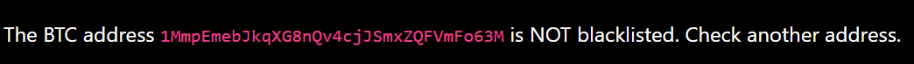
Figura 11. Verificación de la wallet en BTC Black (btcblack.it) — resultado: no se encuentra reportada en lista negra.
¿Se encuentra en lista negra? No. Al verificar la dirección en btcblack.it
(15/11/2026) no aparece reportada en ninguna lista negra conocida; esto no invalida la
identificación de la wallet — solo indica que, al día de hoy, no ha sido marcada como maliciosa
en ese servicio en particular.